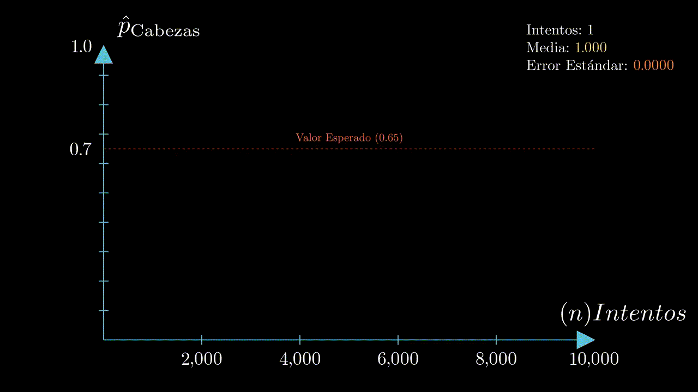

[1] "Independientes"Primero, debemos entender correctamente cómo funcionan las probabilidades conjuntas y condicionales.
Sabemos que:
\[P(\text{ocurra un evento } A) = P(A)\]
Segundo:
\[P(A \text{ y } B) = P(A \cap B)\]
Y si es que sabemos que \(A\) y \(B\) son independientes entre sí (\(A \perp B\)), entonces:
\[P(A \cap B) = P(A) \times P(B)\]
En una ciudad se estudian los hábitos de fumar y hacer deporte. La probabilidad de que una persona fume es 0.30, la probabilidad de que haga deporte es 0.40 y la probabilidad de que fume y haga deporte al mismo tiempo es 0.12.
Con esta información, responde lo siguiente:
a) ¿Son fumar y hacer deporte eventos independientes? Explica usando la definición de independencia.
Sabemos que dos eventos son independientes entre sí si se cumple que:
\[P(\text{Fume} \cap \text{Deporte} ) = P(\text{Fume}) \times P(\text{Deporte})\]
Sabemos que:
\[P(\text{Fume}) \times P(\text{Deporte}) = 0.30 \times 0.40 = 0.12\]
Como el producto de las probabilidades individuales (\(0.12\)) es exactamente igual a la probabilidad conjunta, podemos concluir de forma segura que ambos eventos son independientes.
Por definición, la probabilidad de que ocurra un evento \(A\) luego de saber que un evento \(B\) ocurrió, se denota como:
\[P(A\mid B)\]
Y se puede calcular así:
\[P(A\mid B)=\frac{P(A \cap B)}{P(B)}\]
Para poder calcular \(P(A \mid B)\) si solo tenemos la información de \(P(B \mid A)\), utilizamos el Teorema de Bayes:
\[P(A\mid B)=\frac{P(B\mid A)\,P(A)}{P(B)}\]
Y por último, la Ley de Probabilidad Total:
\[P(A) = \sum_{i=1}^{n} P(A \mid B_i) P(B_i)\]
O en términos más simples:
\[P(A) = P(A \mid B) \cdot P(B) + P(A \mid \neg B) \cdot P(\neg B)\]
Un comerciante sabe que el 30% de sus clientes entran a la tienda después de ver un anuncio. De estos, el 10% realiza una compra. De los clientes que no vieron el anuncio, el 5% realiza una compra.
Si un cliente realiza una compra, ¿cuál es la probabilidad de que haya visto el anuncio?
Tenemos:
Sabemos que debemos calcular \(P(\text{Vio el anuncio} \mid \text{Compra})\), y para ello utilizamos Bayes:
\[P(\text{Vio el Anuncio} \mid \text{Compra}) = \frac{P(\text{Compra} \mid \text{Vio el anuncio}) \cdot P(\text{Vio el anuncio})}{P(\text{Compra})}\]
Sin embargo, sabemos que nos falta \(P(\text{Compra})\) para poder completar la ecuación.
La calculamos utilizando la Ley de Probabilidad Total:
\[P(\text{Compra}) = P(\text{Compra} \mid \text{Vio}) \cdot P( \text{Vio}) + P(\text{Compra} \mid \text{Vio}) \cdot P(\text{No vio})\]
\[P(\text{Compra}) = (0.10 \cdot 0.30) + (0.05 \cdot 0.70)\] \[P(\text{Compra}) = 0.03 + 0.035 = 0.065\]
Ya teniendo las tres variables, calculamos \(P(\text{Vio el anuncio} \mid \text{Compra})\):
\[P(\text{Vio el anuncio} \mid \text{Compra}) = \frac{0.10 \cdot 0.30}{0.065} \approx 0.4615\]
VEA <- 0.3 # Vio el Anuncio
NVEA <- 1 - VEA # No vio el anuncio
CA <- 0.1 # Compró luego de ver el anuncio
CNA <- 0.05 # Compró pero no ha visto el anuncio
# Probabilidad de que compre
COMP <- (VEA * CA) + (CNA * NVEA)
# Comprador que vio el anuncio
AC <- (CA * VEA) / COMP
print(paste("La prob. de que haya visto el anuncio es de", round(AC, 4) * 100,"%"))[1] "La prob. de que haya visto el anuncio es de 46.15 %"Un experimento aleatorio que posee exactamente dos resultados posibles: éxito (\(1\)) y fracaso (\(0\)).
Sea \(X\) una variable aleatoria de Bernoulli, su función de probabilidad está definida por:
\[P(X = x) = \begin{cases} p & \text{si } x = 1 \\ 1 - p & \text{si } x = 0 \end{cases}\]
Su función de masa de probabilidad (PMF) es:
\[f(x) = p^{x}(1-p)^{1-x}\]
Simulemos el lanzamiento de una moneda, donde consideramos como “éxito” obtener cara (\(p\)).
Sin embargo, como es una moneda desigual, la probabilidad de obtener ese lado de la moneda es igual a 0.65:
(Obtuvimos el valor 1, o sea cara)
Se utiliza para obtener el número de éxitos (\(1\)) en una secuencia de ensayos independientes.
Corresponde a la suma de ensayos de Bernoulli \((Y = X_1 + X_2 + \dots + X_n)\) independientes y con distribución idéntica.
Su PMF es:
\[P(Y=y) = f(y) = \frac{n!}{y! (n-y)!} \cdot p^{y} (1-p)^{n-y}\]
Volvamos al mismo ejemplo de antes, pero ahora con 1000 intentos:

Sea \(X\) el número de caras obtenidas cuando se lanza una moneda 3 veces. Encuentra \(P(X = 2)\)
La probabilidad de obtener \(k\) éxitos en \(n\) intentos está dada por:
\[P(X=k) = \frac{n!}{k! (n-k)!} \cdot p^{k} (1-p)^{n-k}\]
Como sabemos que \(n = 3\), \(k = 2\) y \(p = 0.5\):
\[P(X=2) = \frac{3!}{2! (3-2)!} \cdot 0.5^{2} (1-0.5)^{3-2}\]
\[P(X = 2) = 3 \cdot 0.25 \cdot 0.5 = 0.375\]
La probabilidad de obtener exactamente 2 caras en 3 lanzamientos es de \(0.375\).
La solución en código sería:
¿Y qué pasa si queremos calcular \(P(X > x)\) o \(P(X \le x)\)?
(Nota: con el argumento lower.tail = FALSE pueden calcular \(P(X > x)\). Si no lo incluyen, la función calcula por defecto \(P(X \le x)\))
(Los pueden encontrar en la carpeta como ejercicios.pdf)
Imagina una enfermedad muy rara y una prueba para detectarla:
Pregunta 1. ¿Cuál es \(P(E\mid T)\)? Usa el Teorema de Bayes.
Pregunta 2. Si elegimos 3 personas al azar, ¿cuál es la probabilidad de que exactamente 2 tengan la enfermedad?
Una empresa está considerando lanzar un nuevo producto al mercado. Realizan una encuesta entre sus consumidores potenciales.
Cada encuestado puede dar una respuesta “Positiva” o “Negativa”. La probabilidad de dar una respuesta “Positiva” es \(r\).
Parte i. Describe el espacio muestral.
Parte ii. Indica qué distribución de probabilidad describe adecuadamente cada respuesta individual. Especifica su PMF.
Parte iii. Expresa la probabilidad de que, al observar las respuestas de 4 encuestados seleccionados al azar, exactamente 2 den una respuesta “Positiva” y los otros 2 den una respuesta “Negativa”. Explica cada componente.
Parte iv. Supongamos que las respuestas no están influenciadas por el género del encuestado, y que el 60% son mujeres. Determina la probabilidad \(P(\text{Mujer}\mid \text{Positiva})\).